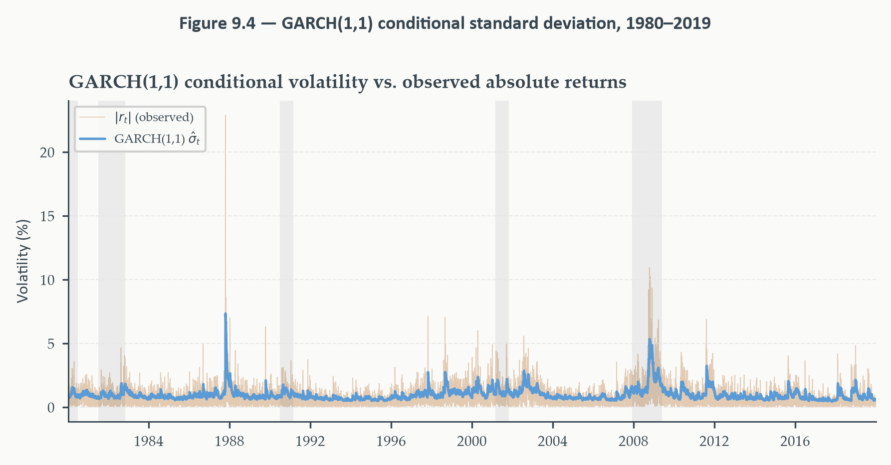
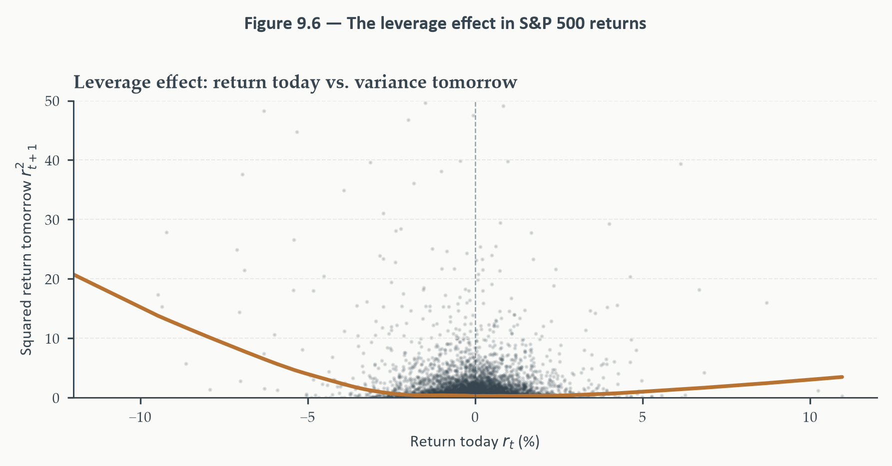
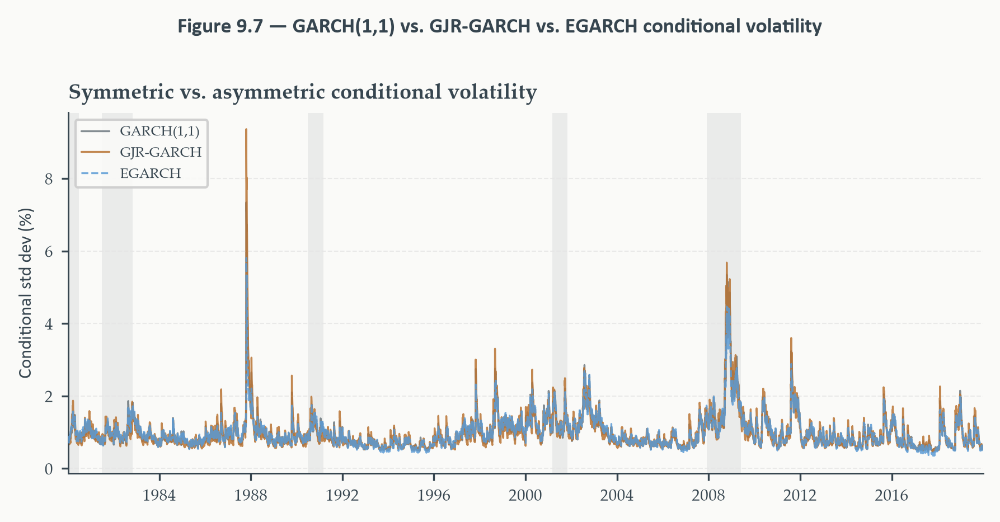
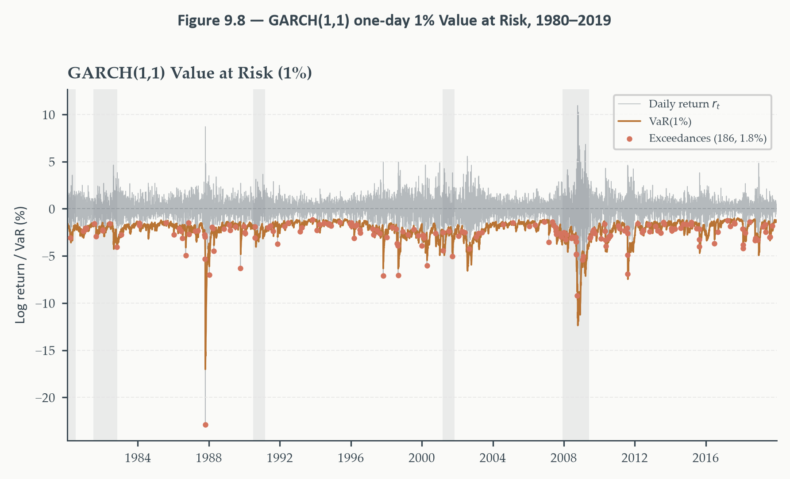

Chapter 9
2026-08-10
Every model in Chapters 3 through 8 targeted the conditional mean — the best point forecast, given what we know today. What if, for some series, that entire question turns out to have almost no answer?
Yes — but not about the mean. The variance of returns turns out to be highly forecastable, even when the mean is not. Calm periods stay calm; turbulent periods stay turbulent. This chapter is entirely about that second moment — a different object than everything built so far, and arguably more economically consequential for risk management, options pricing, and portfolio construction.
One empirical fact, two workhorse models built on it, two applied extensions:
Running example: daily S&P 500 log returns, 1980–2019 — a sample containing Black Monday, the Asian and Russian crises, the dot-com bust, and the Global Financial Crisis, exactly the episodes GARCH models were built to handle.
Section 1
If a predictable pattern existed in stock prices — reliably rising on Tuesdays, say — what would happen to it?
Efficient Market Hypothesis (Fama, 1970). Asset prices already reflect all available information. Any predictable pattern would be exploited by investors buying before a predicted rise and selling before a predicted fall — arbitraging the pattern away almost immediately. In a competitive, well-informed market, no systematic profit opportunity should survive.
Let \(P_t\) be the index level, \(r_t=\log(P_t/P_{t-1})\) the log return. Under the weak-form EMH:
\[ \mathbb{E}[r_t\mid\mathcal{F}_{t-1}] = \mu \]
\(\mu\): a constant risk premium, the compensation for holding a risky asset. Everything beyond that constant should be unforecastable.
\[ \varepsilon_t = r_t-\mu, \qquad \mathbb{E}[\varepsilon_t\mid\mathcal{F}_{t-1}]=0 \]
Not just “returns are a random walk” — the innovation itself must be white noise. No linear or nonlinear function of past returns can predict \(\varepsilon_t\). This is a stronger claim than the unit-root behavior Chapter 4 established for macroeconomic levels: there, we expected drift and predictable persistence in the level. Here, even the innovation to the return process should carry zero forecastable structure.
Eight chapters built ARIMA, VAR, structural identification — an entire forecasting toolkit. What does the EMH say about applying any of it to stock returns?
If markets are efficient, none of it helps predict tomorrow’s return. Every tool from Chapters 3 through 8 targets exactly the object the EMH says is unforecastable — the conditional mean.
But this conclusion rests on a specific, narrow reading of what “unpredictable” covers. The EMH’s actual claim is about the conditional mean — nothing else.
The EMH pins down \(\mathbb{E}[r_t\mid\mathcal{F}_{t-1}]=\mu\). What about \(\text{Var}(r_t\mid\mathcal{F}_{t-1})\)?
Nothing in the efficient-market argument requires the conditional variance to be constant. Investors knowing tomorrow will be volatile does not create an arbitrage — higher volatility raises risk and expected return symmetrically, leaving no guaranteed profit to extract. Conditional heteroskedasticity and market efficiency coexist entirely comfortably.
This is the pivot the entire chapter turns on: the question shifts from “what will tomorrow’s return be” — which markets answer before we can — to “how uncertain is tomorrow’s return.” That second question is both forecastable and economically consequential.
Conditional heteroskedasticity. \(\{r_t\}\) is conditionally heteroskedastic if \(\text{Var}(r_t\mid\mathcal{F}_{t-1})=\sigma_t^2\) is time-varying — not constant.
A series can be unconditionally homoskedastic while still having a time-varying conditional variance. \(\text{Var}(r_t)\), the long-run unconditional average, may be a fixed constant — but \(\sigma_t^2\), the relevant measure of uncertainty specifically for tomorrow, moves. Forecasting decisions — option pricing, VaR, portfolio risk — depend on \(\sigma_t^2\), not the unconditional average. This distinction is what the rest of the chapter builds on.
Section 2
Plot the ACF of \(r_t\) itself, then the ACF of \(r_t^2\). What should the EMH predict for each?
The ACF of raw returns \(r_t\) is flat — no significant spikes at any lag, exactly as the EMH requires. The ACF of squared returns \(r_t^2\) decays slowly, remaining significantly positive for dozens of lags.
This is not a contradiction of the EMH — it’s the empirical fact the rest of the chapter formalizes. A large move today predicts large moves tomorrow, next week, and beyond — regardless of direction. Volatility clustering, made visible in one comparison.
Why no contradiction. The EMH concerns the conditional mean — no trading strategy based on past returns earns abnormal profits. It says nothing about the conditional variance. Knowing tomorrow will be volatile doesn’t tell you which way the market moves — no arbitrage to extract. Conditional heteroskedasticity and market efficiency coexist without tension.
Eyeballing a slowly decaying ACF is suggestive. What’s the formal test?
Fit a mean model, extract residuals \(\hat\varepsilon_t\); regress squared residuals on their own lags:
\[ \hat\varepsilon_t^2 = a_0+a_1\hat\varepsilon_{t-1}^2+\cdots+a_q\hat\varepsilon_{t-q}^2+\nu_t \]
ARCH-LM test. \(H_0\): all \(q\) slope coefficients jointly zero — no ARCH effects. Test statistic: \(\text{LM}=T\cdot R^2\xrightarrow{d}\chi^2(q)\) under \(H_0\), from the auxiliary regression’s \(R^2\).
De-mean the returns, apply the ARCH-LM test at \(q=10\) lags:
LM = 879.96, \(p\approx0\) — a decisive rejection at any conventional significance level. The residuals from a constant-mean model are not homoskedastic; the conditional variance is time-varying and highly persistent. An ARCH or GARCH model isn’t just appropriate here — it’s required by the data.
A direct link back to Chapters 5 and 8. The VECM residuals in Chapter 8’s yield curve application showed Jarque-Bera rejections from fat tails and excess kurtosis — precisely the fingerprint of time-varying conditional variance. Those non-normal residuals weren’t a nuisance to patch over; they were a signal the homoskedastic error assumption was already misspecified. This chapter is the tool that finally addresses that signal directly, rather than working around it.
Write returns as mean plus innovation, then decompose the innovation into a time-varying scale and a standardized shock:
\[ r_t = \mu+\varepsilon_t, \qquad \varepsilon_t=\sigma_tz_t, \qquad z_t\sim\text{i.i.d.}(0,1) \]
The key relaxation. Standard ARMA assumes \(\varepsilon_t\sim\text{i.i.d.}(0,\sigma^2)\) — a fixed variance. ARCH lets \(\sigma_t^2=\text{Var}(\varepsilon_t\mid\mathcal{F}_{t-1})\) move with the conditioning information itself.
Engle (1982). The conditional variance is a weighted sum of \(q\) past squared innovations:
\[ \sigma_t^2 = \omega+\sum_{i=1}^q\alpha_i\varepsilon_{t-i}^2, \qquad \omega>0,\;\alpha_i\geq0 \]
The mechanism, in one sentence. After a large shock, the conditional variance stays elevated — making further large shocks more likely; after a stretch of small shocks, variance stays low. Volatility is persistent because it’s self-reinforcing, not because some external variable is forcing it.
The ACF of \(r_t^2\) decays slowly — significant autocorrelation well beyond lag 20. What does matching that require?
A very long lag polynomial. Under ARCH(\(q\)), the autocorrelation of \(r_t^2\) is exactly zero beyond lag \(q\) — so matching persistence extending past lag 20 requires \(q=20\) or more: 21 parameters (\(\omega\) plus \(\alpha_1,\ldots,\alpha_{20}\)), each subject to a non-negativity constraint. The model becomes unwieldy, and the estimates imprecise.
A genuinely familiar shape of problem. This is exactly Chapter 3’s MA(\(\infty\))-vs-ARMA tension, one level up: fitting long, slowly-decaying dependence with a purely finite-lag specification is always expensive. Chapter 3’s fix there was adding a lagged dependent variable. Section 3 applies the identical trick here.
Section 3
Chapter 3’s fix for MA(\(\infty\))’s parameter explosion was adding a lagged dependent variable — an ARMA(1,1) approximates infinite MA memory with two parameters. Does the identical trick work here?
Bollerslev (1986): add the lagged conditional variance \(\sigma_{t-1}^2\) to the ARCH equation. This lets today’s variance depend on all past squared shocks with geometrically declining weights — an ARCH(\(\infty\)) — at the cost of exactly one extra parameter.
\[ r_t = \mu+\varepsilon_t, \qquad \varepsilon_t=\sigma_tz_t, \qquad z_t\sim\text{i.i.d.}(0,1) \]
\[ \sigma_t^2 = \omega+\alpha\varepsilon_{t-1}^2+\beta\sigma_{t-1}^2 \]
Three parameters — \(\omega\), \(\alpha\), \(\beta\) — drive the entire conditional variance process.
\(\omega>0\): the variance floor — prevents \(\sigma_t^2\) collapsing to zero even after a long quiet stretch; pins down the unconditional variance.
\(\alpha\geq0\): the shock impact — how strongly yesterday’s realized shock feeds into today’s variance. Large \(\alpha\): a single bad day jumps volatility immediately.
\(\beta\geq0\): the variance persistence — how much of yesterday’s conditional variance itself carries forward. \(\beta\) near 1: once elevated, volatility decays slowly.
The sum \(\alpha+\beta\) is the single most important quantity in the model — everything about the dynamics traces back to it.
Define the centered variance \(\tilde\sigma_t^2=\sigma_t^2-\sigma^2\). What kind of process does it satisfy?
Substituting and rearranging the GARCH(1,1) equation shows \(\tilde\sigma_t^2\) follows a scalar AR(1) with coefficient \((\alpha+\beta)\).
Chapter 1’s stability condition, unchanged: the characteristic root inside the unit circle. Since \(\alpha,\beta\geq0\), that condition collapses to exactly \(\alpha+\beta<1\). No new theory required — this is the same root-counting logic applied to the variance process instead of the level.
\[ \alpha+\beta<1 \quad\Longrightarrow\quad \sigma^2=\frac{\omega}{1-\alpha-\beta} \]
How long does an elevated variance take to decay halfway back to its long-run level?
\[ h_{1/2} = \frac{\log(0.5)}{\log(\alpha+\beta)} \]
For S&P 500 daily returns, \(\alpha+\beta\) typically sits around 0.97-0.99 — implying half-lives of 23 to 69 trading days, roughly one to three months. Volatility shocks are genuinely long-lived: exactly the slow-decay pattern the rolling-variance figure showed visually in Section 2.
Substitute repeatedly for \(\sigma_{t-1}^2\), \(\sigma_{t-2}^2\), and so on:
\[ \begin{aligned} \sigma_t^2 &= \omega+\alpha\varepsilon_{t-1}^2+\beta\sigma_{t-1}^2 \\ &= \omega(1+\beta)+\alpha\varepsilon_{t-1}^2+\alpha\beta\varepsilon_{t-2}^2+\beta^2\sigma_{t-2}^2 \\ &= \omega\sum_{j=0}^\infty\beta^j+\alpha\sum_{j=1}^\infty\beta^{j-1}\varepsilon_{t-j}^2 \end{aligned} \]
Using \(\sum_{j=0}^\infty\beta^j=1/(1-\beta)\) for \(\beta<1\):
\[ \sigma_t^2 = \frac{\omega}{1-\beta}+\alpha\sum_{j=1}^\infty\beta^{j-1}\varepsilon_{t-j}^2 \]
Exactly an ARCH(\(\infty\)), with the weight on lag \(j\) declining geometrically at rate \(\beta\). One parameter, \(\beta\), encodes an entire infinite declining lag polynomial — the same economy Chapter 3’s ARMA achieved for the conditional mean, now achieved for the conditional variance.
\(\omega=0.02\), \(\alpha=0.08\), \(\beta=0.90\). Persistence: \(\alpha+\beta=0.98\); unconditional variance: \(0.02/(1-0.98)=1.00\); half-life \(\approx34\) days.
Start at the long-run level, \(\sigma_{t-1}^2=1.00\), and a large shock \(\varepsilon_{t-1}=3.0\) (roughly three standard deviations):
\[ \sigma_t^2 = 0.02+0.08(3.0)^2+0.90(1.00) = 0.02+0.72+0.90 = 1.64 \]
Conditional std. dev. jumps from 1.00 to \(\sqrt{1.64}\approx1.28\). A single large shock produces an immediate, sizable jump.
Next period, a moderate shock \(\varepsilon_t=0.5\):
\[ \sigma_{t+1}^2 = 0.02+0.08(0.5)^2+0.90(1.64) = 0.02+0.02+1.476 = 1.516 \]
The \(\beta=0.90\) term carries forward most of yesterday’s elevated variance, even with a small shock today — the persistence mechanism, made arithmetic. One more moderate shock (\(\varepsilon_{t+1}=0.3\)) gives \(\sigma_{t+2}^2=1.391\): declining slowly toward 1.00, exactly as the 34-day half-life predicts. Not a fast reversion — a long, gradual one.
OLS can’t estimate this — \(\sigma_t^2\) enters the likelihood itself, nonlinearly. What estimator does the job?
\[ \ell_t(\theta) = -\tfrac12\log(2\pi)-\tfrac12\log\sigma_t^2(\theta)-\frac{\varepsilon_t^2}{2\sigma_t^2(\theta)} \]
Quasi-maximum likelihood (QML). Maximize the Gaussian log-likelihood \(\sum_t\ell_t(\theta)\) over \(\theta=(\mu,\omega,\alpha,\beta)\). “Quasi” because the estimator stays consistent and asymptotically normal even if returns aren’t actually Gaussian — provided the mean and variance are correctly specified. Robust (Bollerslev-Wooldridge) standard errors remain valid regardless of the true innovation distribution.
Why this matters for financial data specifically. Returns are known to be fat-tailed — QML’s robustness to that misspecification is exactly why it’s the standard approach, not a Gaussian assumption we’re hoping happens to be true.
| Parameter | Estimate | Significance |
|---|---|---|
| \(\hat\mu\) | small, positive | *** |
| \(\hat\omega\) | small, positive | *** |
| \(\hat\alpha\) | — | *** |
| \(\hat\beta\) | — | *** |
All four parameters precisely estimated, \(p<0.01\). Persistence \(\hat\alpha+\hat\beta=0.985\) — confirms covariance stationarity, but only just. Half-life: 47.1 trading days, roughly two months — a shock from an episode like Black Monday or the GFC takes most of a quarter to dissipate. Unconditional daily std. dev.: 1.11% — annualized, \(1.11\times\sqrt{252}\approx17.6\%\), matching the S&P 500’s long-run historical average closely.

The fitted conditional standard deviation (blue) against observed \(|r_t|\) (copper, background) — a simple non-parametric volatility proxy. The GARCH line rises sharply during each major episode and decays gradually once turbulence passes, capturing exactly the persistent component of clustering the raw absolute returns show noisily.
Section 4
GARCH(1,1)’s \(\alpha\varepsilon_{t-1}^2\) depends only on the square of the shock — a \(+3\%\) day raises tomorrow’s variance by exactly as much as a \(-3\%\) day. For equity markets, is that symmetry empirically correct?
The leverage effect (Black, 1976). Negative returns raise future volatility by more than equally sized positive returns. Black’s original mechanism: a price decline raises a firm’s debt-to-equity ratio, making equity riskier. A more modern reading: falling prices raise the risk premium investors demand, and that demand itself drives volatility.
Whatever the mechanism, the pattern is empirically robust across equity markets and time periods.

Each point: today’s return (x-axis) vs. tomorrow’s squared return (y-axis) — a proxy for next-day variance. The LOWESS smooth is visibly asymmetric: large negative returns predict higher next-day variance than equally large positive returns. Symmetric GARCH, by construction, fits a symmetric U-shape around zero — it cannot reproduce this skew, no matter how it’s tuned.
Glosten, Jagannathan, and Runkle (1993). Add an indicator switching on for negative shocks:
\[ \sigma_t^2 = \omega+(\alpha+\gamma\,\mathbf{1}_{\varepsilon_{t-1}<0})\varepsilon_{t-1}^2+\beta\sigma_{t-1}^2 \]
Positive shock: ARCH effect is \(\alpha\). Negative shock: ARCH effect is \(\alpha+\gamma\). \(\gamma>0\): leverage effect present. \(\gamma=0\): collapses to symmetric GARCH exactly.
Stationarity condition: \(\alpha+\gamma/2+\beta<1\) — the \(\gamma/2\) appears because the indicator equals 1 with probability \(\tfrac12\) under a symmetric innovation distribution, so the average ARCH contribution is \(\alpha+\gamma/2\).
\(\omega=0.02\), \(\alpha=0.04\), \(\gamma=0.10\), \(\beta=0.88\); \(\sigma_{t-1}^2=1.0\). Two equal-magnitude shocks:
\[ \varepsilon_{t-1}=+2.0:\quad \sigma_t^2=0.02+(0.04)(4.0)+0.88=1.06 \]
\[ \varepsilon_{t-1}=-2.0:\quad \sigma_t^2=0.02+(0.04+0.10)(4.0)+0.88=1.46 \]
Same-size shock, opposite sign: 1.46 vs. 1.06 — the negative shock generates a conditional variance 38% larger, entirely attributable to \(\gamma\). This is the leverage effect, not as a concept, but as a number you can check by hand.
GJR-GARCH needs \(\omega,\alpha,\gamma,\beta\geq0\) to keep \(\sigma_t^2\) positive. Is there a way to build in asymmetry without that constraint?
Nelson (1991). Model the logarithm of the conditional variance instead:
\[ \log\sigma_t^2 = \omega+\beta\log\sigma_{t-1}^2+\alpha|z_{t-1}|+\gamma z_{t-1}, \qquad z_{t-1}=\varepsilon_{t-1}/\sigma_{t-1} \]
Guaranteed positive regardless of any parameter’s sign — no constraints needed, since exponentiating \(\log\sigma_t^2\) is positive by construction. \(\alpha|z_{t-1}|\): magnitude effect, symmetric. \(\gamma z_{t-1}\): sign effect — the asymmetry.
The sign convention flips relative to GJR-GARCH. Leverage effect in EGARCH: \(\gamma<0\). In GJR-GARCH: \(\gamma>0\). Same economic phenomenon, opposite notational convention — worth checking carefully when reading either model’s output.
\(\omega=-0.10\), \(\beta=0.97\), \(\alpha=0.15\), \(\gamma=-0.08\); \(\log\sigma_{t-1}^2=0\). Standardized shocks \(z_{t-1}=\pm2.0\):
\[ z_{t-1}=-2.0:\quad \log\sigma_t^2=-0.10+0.30+0.16=0.36 \;\Rightarrow\; \sigma_t^2\approx1.43 \]
\[ z_{t-1}=+2.0:\quad \log\sigma_t^2=-0.10+0.30-0.16=0.04 \;\Rightarrow\; \sigma_t^2\approx1.04 \]
1.43 vs. 1.04 — an asymmetry ratio of \(\approx1.37\), closely matching the GJR-GARCH example, achieved with a completely different functional form and no positivity constraints at all.
The leverage parameter is positive and highly significant in GJR-GARCH (\(\hat\gamma=0.132\), \(p<0.01\)) — confirming negative shocks raise volatility by more than equally sized positive ones. GJR-GARCH beats symmetric GARCH on both AIC and BIC by a meaningful margin — the single extra parameter earns its place decisively.
GJR-GARCH beats EGARCH on this specific series (AIC 26,451 vs. 26,726) — despite EGARCH’s theoretical elegance (no constraints, easier multi-step forecasting). This doesn’t mean EGARCH is inferior generally; it means the simpler indicator specification happens to fit the S&P 500 more efficiently than the exponential formulation. All three models agree on persistence: 0.978-0.980, half-life around 30 trading days.

The three series track closely for most of the sample — differences concentrate at the peaks. Both asymmetric models assign higher conditional variance than symmetric GARCH specifically during downturns driven by sharp declines, most visibly around 2008-09: the leverage effect doing exactly what it’s designed to do.
AIC and BIC measure in-sample fit — not forecast accuracy. Exactly Chapter 5’s lesson, now applied to volatility models: the AIC-best specification for the history isn’t guaranteed to produce the best forecasts out of sample.
A genuine out-of-sample loss function exists for volatility models too. Use \(r_{t+1}^2\) as the target proxy: model \(i\) is better if \(n^{-1}\sum(\hat\sigma_{t+1|t,i}^2-r_{t+1}^2)^2\) is smaller. Chapter 5’s Diebold-Mariano test applies directly to comparing two such loss sequences — the same formal testing machinery, one chapter later, on a genuinely different kind of forecast target.
Section 5
If two assets both become more volatile during a crisis, does that make a portfolio holding both more or less risky? What determines the answer?
Whether their correlation rises or falls. Empirically, during financial crises, correlations between risky assets tend to spike precisely when diversification is needed most — equities fall together, credit spreads widen together, safe-haven hedges weaken.
A model assuming constant correlation misses this dynamic entirely. A portfolio optimized under normal-market correlations is systematically under-hedged during exactly the episodes that matter most. Every model in Sections 2-4 handles one series at a time — risk management is fundamentally about how assets move together.
Engle (2002). For \(N\) returns \(\mathbf{r}_t\), the conditional covariance matrix decomposes as \(H_t=D_tR_tD_t\): \(D_t\) diagonal (conditional std. devs.), \(R_t\) the conditional correlation matrix.
Step 1: fit a separate GARCH(1,1) to each series, extract standardized residuals \(\hat z_{it}=\hat\varepsilon_{it}/\hat\sigma_{it}\) — this produces \(D_t\).
Step 2: model correlation among the \(\hat z_{it}\) via a scalar recursion.
\[ Q_t = (1-a-b)\bar Q+a\,\mathbf{z}_{t-1}\mathbf{z}_{t-1}'+bQ_{t-1} \]
The GARCH(1,1) analogy is exact. \(\bar Q\): unconditional correlation matrix (sample estimate). \(a\) plays \(\alpha\)’s role — how fast \(Q_t\) responds to new joint shocks. \(b\) plays \(\beta\)’s role — how much of \(Q_{t-1}\) carries forward. \(a+b<1\): the identical stationarity condition, one level up.
Normalize to a genuine correlation matrix:
\[ R_t = \text{diag}(Q_t)^{-1/2}\,Q_t\,\text{diag}(Q_t)^{-1/2} \]
guaranteeing diagonal entries exactly 1, off-diagonal entries in \((-1,1)\), at every \(t\).
Two assets, \(\bar Q=Q_{t-1}=\begin{pmatrix}1.00&0.20\\0.20&1.00\end{pmatrix}\), \(a=0.05\), \(b=0.93\). Both hit by large negative shocks: \(z_{1,t-1}=-2.0\), \(z_{2,t-1}=-2.5\).
\[ \mathbf{z}_{t-1}\mathbf{z}_{t-1}' = \begin{pmatrix}4.00&5.00\\5.00&6.25\end{pmatrix} \]
The off-diagonal entry — 5.00 — is large and positive precisely because both shocks were large and shared the same sign. This is the term that drives the correlation update; a mixed-sign pair of shocks would instead pull correlation down.
\[ Q_t = 0.02\begin{pmatrix}1.00&0.20\\0.20&1.00\end{pmatrix}+0.05\begin{pmatrix}4.00&5.00\\5.00&6.25\end{pmatrix}+0.93\begin{pmatrix}1.00&0.20\\0.20&1.00\end{pmatrix} = \begin{pmatrix}1.15&0.44\\0.44&1.2625\end{pmatrix} \]
Normalizing via \(\sqrt{q_{11}}\approx1.072\), \(\sqrt{q_{22}}\approx1.124\):
\[ R_t = \begin{pmatrix}1.000&0.365\\0.365&1.000\end{pmatrix} \]
Conditional correlation jumps from 0.20 to 0.365 — an 83% increase — purely because both assets were hit simultaneously. This is flight-to-correlation, arithmetic rather than metaphor: when everything falls together, the model updates immediately to reflect the higher realized co-movement.
DCC’s most consequential real-world application: documenting exactly how correlations across asset classes shift during crises.
A DCC model on S&P 500 and 10-year Treasury returns shows \(\rho_{12,t}\) oscillating around a mildly negative long-run value — the classic equity-bond diversification relationship — but spiking positive during acute stress, including the 2008-09 GFC. Equity-bond, cross-country equity, and commodity-equity correlations all rose sharply during the GFC specifically, erasing diversification benefits that had held for years beforehand.
The practical stakes. A portfolio optimized on the long-run average correlation is misspecified exactly during crises — correlations move in precisely the direction that eliminates the diversification benefit the portfolio was built around. This is why risk departments and portfolio managers use time-varying DCC correlations for stress testing, not static historical averages.
The GARCH conditional variance is a model-based estimate from daily close-to-close returns. Is there a way to estimate the same underlying quantity without a parametric model at all?
Realized volatility. With \(M\) intraday returns \(r_{t,1},\ldots,r_{t,M}\) sampled at, say, five-minute intervals:
\[ RV_t = \sum_{j=1}^M r_{t,j}^2 \]
A direct, model-free estimate of the day’s integrated variance — with \(M\approx78\) five-minute bars in a 6.5-hour trading day, far more precise than the single squared daily return as a volatility proxy.
A genuinely separate literature (Andersen, Bollerslev, Diebold, and Labys, 2003), modelable directly with ARMA-type specifications (HAR-RV) — the same time series toolkit from Chapter 3, applied to a very different kind of series.
Section 6
Every risk measure so far has been the standard deviation — a symmetric, average measure of typical fluctuation. What does a portfolio manager actually need to know before a genuinely bad day?
Not “how big is a typical deviation” — “how bad can things get, at a given confidence level?”
Value-at-Risk (VaR). The loss not exceeded with probability \(1-\alpha\) over horizon \(h\):
\[ \text{VaR}_t(\alpha,h) = \inf\{v: P(L_{t+h}>v\mid\mathcal{F}_t)\leq\alpha\} \]
At the standard specification — one day, 1% tail — VaR(1%) is the loss level exceeded on only 1% of trading days.
The simplest VaR estimate: sort the past 250 daily returns, read off the 2.5th-lowest. No model required. What’s the catch?
It treats every day in the window as equally likely. A calm February from five years ago gets the same weight as last week’s turbulent trading. During calm periods, historical simulation overstates risk — old volatile days are still in the window. During a crisis, it understates risk — the window of past losses hasn’t caught up with today’s elevated volatility yet. Either way, it’s structurally the wrong shape of tool for time-varying risk.
Since \(r_{t+1}=\mu+\sigma_{t+1}z_{t+1}\) with \(z_{t+1}\sim N(0,1)\):
\[ r_{t+1}\mid\mathcal{F}_t \sim N(\mu,\sigma_{t+1}^2) \quad\Longrightarrow\quad \text{VaR}_{t+1}(1\%) = \hat\mu-2.326\,\hat\sigma_{t+1} \]
The key feature: \(\hat\sigma_{t+1}\) is the GARCH forecast, updated daily. When volatility is elevated, VaR expands automatically to reflect the higher risk; when markets are calm, it contracts — exactly what historical simulation structurally cannot do, since its estimate only changes as old observations roll out of a fixed window.

The VaR band widens dramatically during each major episode and narrows in calm stretches — exactly the time-variation historical simulation can’t produce. Over the full sample (10,080 trading days), the GARCH(1,1) VaR(1%) was breached on 186 days — an exceedance rate of 1.85%, nearly double the nominal 1%.
The fat-tailed innovation problem from Section 3 isn’t merely academic. It causes Gaussian GARCH to systematically underestimate tail risk — with real consequences for anyone relying on it for regulatory capital or stop-loss decisions.
An 1.85% exceedance rate against a nominal 1% is informative but informal. Is the gap large enough to reject correct coverage?
Kupiec (1995) proportion-of-failures test. \(H_0:p=\alpha\) — the true exceedance probability equals the stated coverage. Under \(H_0\), exceedances are i.i.d. Bernoulli(\(\alpha\)):
\[ \text{LR}_{\text{POF}} = -2\log\left[\frac{\alpha^n(1-\alpha)^{T-n}}{\hat p^n(1-\hat p)^{T-n}}\right] \xrightarrow{d} \chi^2(1) \]
\(n\): observed exceedances. \(\hat p=n/T\): observed rate.
186 observed exceedances against an expected 100.8 (10,080$$1%). LR = 58.22 — far into the rejection region against a \(\chi^2(1)\) 1% critical value of 6.63. The null of correct coverage is rejected at any conventional significance level. In plain terms: the model said losses this severe should occur once per hundred days; they occurred almost twice as often.
Not a failure of the GARCH variance equation — the volatility clustering is modeled well. It’s a failure of the distributional assumption layered on top of it. The Gaussian tail is simply too thin for S&P 500 returns.
Student-\(t\) GARCH. Replace \(z_t\sim N(0,1)\) with a standardized Student-\(t\); the variance equation is completely unchanged — only the innovation distribution gets more flexible. Typical estimated \(\hat\nu\) for equity indices: 5-8, far below the Gaussian limit \(\nu\to\infty\) — confirming the tail thickness is real and economically significant. In arch, this is one argument change (dist="t"); the resulting VaR typically passes Kupiec where Gaussian GARCH failed.
Kupiec only checks unconditional coverage — the right fraction of exceedances, averaged over the whole sample. It does not check whether they cluster — if 1% of days are exceedances but they all happen during the GFC, the model is failing on a different dimension entirely (conditional coverage), which Kupiec cannot detect. The Christoffersen (1998) test is the natural next step, testing exceedance independence directly.
Two genuinely separate modeling choices, easy to conflate. The variance equation — \(\sigma_t^2=\omega+\alpha\varepsilon_{t-1}^2+\beta\sigma_{t-1}^2\) — is fully parametric, describing how volatility evolves. The innovation distribution — Gaussian, Student-\(t\), or left unspecified under QML — is a separate assumption about shock shape. QML’s validity rests exactly on this separation: the variance equation stays consistently estimated even when the distributional assumption is wrong.
When Kupiec rejects VaR coverage, the right fix is the distribution, not the variance equation. The volatility dynamics were well captured; the tail shape wasn’t. Keeping these two components conceptually distinct is one of the most useful habits in applied volatility modeling.
We pivoted from modeling the mean to modeling uncertainty itself. The Efficient Market Hypothesis ruled out predictability in the conditional mean — but said nothing about the conditional variance, and volatility clustering turned out to be exactly the pattern the EMH leaves open. ARCH gave the first formal model, at the cost of needing very long lags to match real persistence; GARCH(1,1) solved that with the same lagged-dependent-variable trick Chapter 3 used for the conditional mean, reducing an ARCH(\(\infty\)) to three interpretable parameters. GJR-GARCH and EGARCH then captured what symmetric GARCH structurally cannot: the leverage effect, bad news raising volatility more than equally-sized good news. DCC extended the framework to how assets move together, revealing that correlations — not just individual volatilities — spike during crises exactly when diversification matters most. And GARCH-based VaR turned conditional variance forecasts into a genuine risk-management tool, with the Kupiec test formalizing exactly where the Gaussian assumption breaks down.
Every model in this chapter assumed the same functional form applies uniformly across the entire sample — the same \(\omega,\alpha,\beta\) during the calm 1990s and the Global Financial Crisis alike. What if the parameters themselves shift, not gradually, but in abrupt regimes?
The ARCH and GARCH family models volatility clustering with a fixed functional form — the same parameters, estimated once, applied uniformly across the entire sample. This is a strong assumption: it requires the same clustering mechanism to operate identically during a calm expansion and a full-blown financial crisis.
Chapter 10 takes this question seriously. Markov-switching models let an entire parameter vector — conditional mean, conditional variance, AR dynamics, all of it — shift between a small number of discrete regimes according to a hidden Markov chain. The regime is genuinely unobserved: at any point, the economy may be in a high-volatility recession or a low-volatility expansion, and it must be inferred probabilistically from the data itself. Hamilton’s (1989) model of US business cycles is the canonical application. The connection to this chapter is direct: where GARCH specifies \(\sigma_t^2\) as a deterministic function of past data, a Markov-switching variance model treats \(\sigma_t^2\) as a discrete random variable to be filtered out of the observed series — the same prediction-correction logic the Kalman filter will use in Chapter 11, making Chapter 10 a genuine conceptual bridge between where we’ve been and where the course is headed.
ECON-5371 · Time Series Analysis and Forecasting